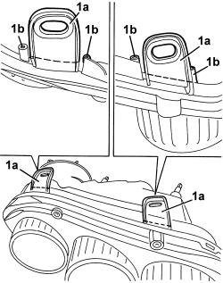
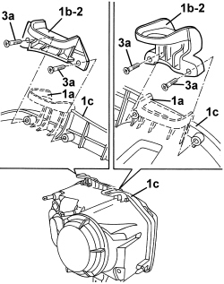

5540B84 BRACKET FASTENING FRONT LIGHT CLUSTER TO THE BODY (ONE) LH OR RH - REPLACE WITH LIGHT CLUSTER DETACHED
- Path
- Procedures > 55 ELECTRICAL EQUIPMENT > 5540 EXTERIOR LIGHTING > 5540B HEADLAMPS > 5540B84 BRACKET FASTENING FRONT LIGHT CLUSTER TO THE BODY (ONE) LH OR RH - REPLACE WITH LIGHT CLUSTER DETACHED
- Kind
- repair procedure (removal / refitting; the operation number is the code)
- Applies to
- all engines; all production periods
- Interactive page
- https://sloeber94.github.io/elrnDB-aBrrSpdr/en/#/946002402
Applies to: all engines; all production periods
1. Use a saw to remove the damaged brackets along the lines shown in the figure.

Applies to: all engines; all production periods
1. Grind the remaining parts of bracket (1a) to allow the new brackets (1b) to fit perfectly to light cluster (1c).
2. Position the new bracket (1b) in its seat on the light cluster.
3. Screw in bolts (3a) and tighten to secure bracket (1b) to light cluster (1c).
